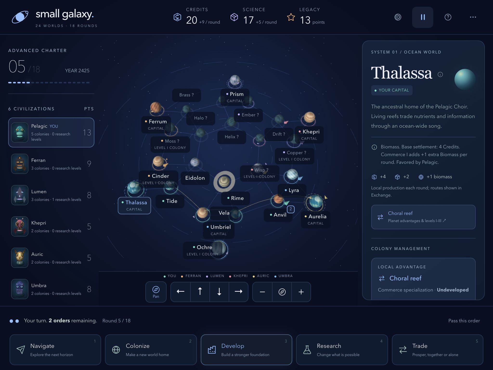
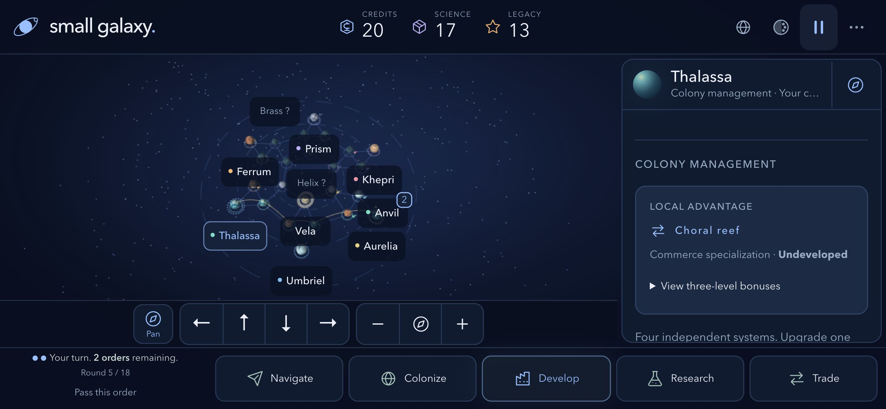

Navigate
Move a fleet along the lanes. A stronger defense wins. Ties hold.
Touch Horizons · Prototype 0.5.2
Small Galaxy is a single-player 3D strategy game about one alien people and the worlds they decide to keep. The star chart is live. Five rivals play by the same rules you do. You get two orders a round, and each one can be spent only once.
Every picture on this page is a frame from the playable build: an Advanced chart, year 2425, round 5 of 18, guided as the Pelagic Choir.
Real-time scenes
The opening, the alien council, the frontier briefing, and the homeworld approach are shot on the same engine as the campaign. Skip any sequence. Commentary is written, not voiced.
The chart
Drag to pan. Switch to Rotate and orbit the chart. Pinch to zoom. In this round Pioneer sits at Anvil, Strength 2, with three highlighted destinations. Lyra belongs to the Umbra Nomads, and the forecast says the defense would hold.
Unsurveyed systems stay marked with a question until a fleet gets close enough to read them.
Two charters
Five orders
Move a fleet along the lanes. A stronger defense wins. Ties hold.
Found a world your fleet already orbits. Income starts next round.
Raise Industry, Research, Defense, or Commerce by one level.
Buy one empire-wide level. It stays yours even if a colony is lost.
Sell cargo, fill a contract, open a route, or offer a pact.
Colonies
Thalassa is an ocean capital with a choral reef. Commerce is the local specialty, still undeveloped in this round. Industry I would add credits on top of the reef. Levels run I, II, and III, and they cannot be skipped.
An adviser sits under the panel and suggests the next order. It does not take the turn for you.
Intergalactic exchange
Planets mint Alloys, Biomass, or Relics on their own. The exchange is a local simulation: finite stock, live prices, delivery contracts, recurring routes, and one pact slot. This round the Choir is holding 6 Alloys, 11 Biomass, and 1 Relic, with a partner lane already running from Aurelia back to Thalassa.
Six peoples
The portrait is a live preview, and the soundtrack changes with the people you choose. Pelagic Choir is on the left. Lumen Archive, with Curator Sera, is on the right.
Amphibious symbionts · Thalassa
Ocean and frozen colonies cost 2 fewer credits and produce +1 credit a round.
Fortress upgrades cost +1 credit.
Silicon-based artisans · Ferrum
Colony upgrades cost 1 fewer credit. Airless worlds need no Habitat research.
Every research level costs +1 Science.
Photonic intelligences · Prism
Research costs 1 fewer Science, and the capital produces extra Science.
New fleets cost +1 credit.
Cooperative insectoids · Khepri
Colonies cost 1 fewer credit. Reinforcements restore 3 Strength instead of 2.
Market exports earn 1 fewer credit per unit.
Avian merchant clans · Aurelia
Better market prices. Routes and pacts earn +1 credit.
New fleets begin at Strength 2.
Void-adapted cephalopods · Umbriel
Fleets travel one extra lane per order, up to four.
The capital produces 1 fewer credit a round.
Seven climates
Atmosphere and sound
Midnight Blue, Crimson, Gold, and Forest recolor the interface. Faction colors and climates do not move. The same round, switched to Gold, is on the right.
Pelagic plays Tides of Thalassa: harp, flute, strings, choir, and light percussion, about 86 seconds, stereo. A manual pause stays paused.
iPad and iPhone
The scenes above are a 1440×900 desktop frame. These are shot from the same build at iPad size and at iPhone screen resolution, landscape and portrait. Round 5, year 2425, Pelagic Choir. Open a frame to see it at full resolution.


The campaign, frame by frame
Open any frame. These are the same scenes as above, plus the title card, the opening chart, and the field guide, collected in one place.
The frames in this strip are 1440×900 desktop shots. iPad frames are 2048×1536 landscape and 1536×2048 portrait. iPhone frames are 1170×2532 portrait and 2532×1170 landscape.